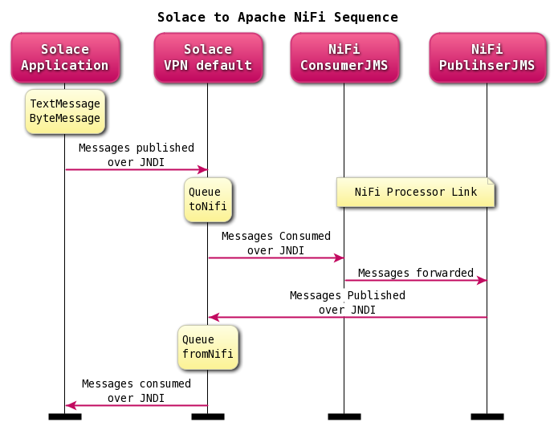
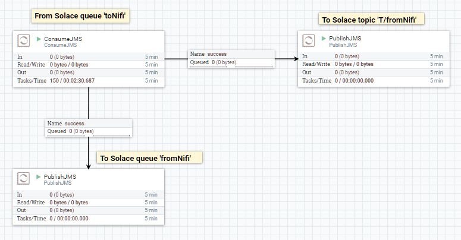
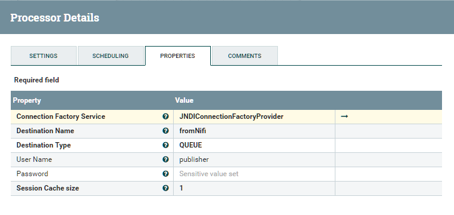
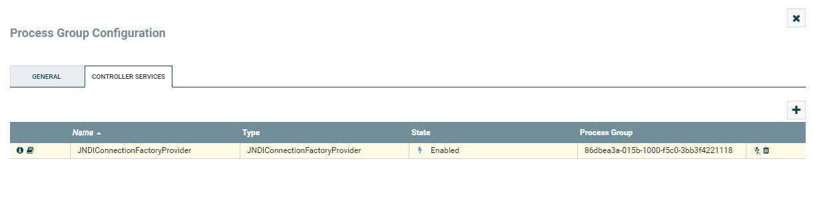
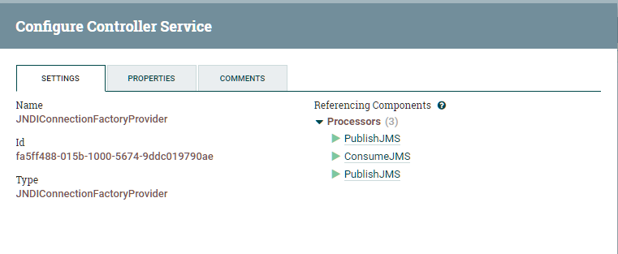
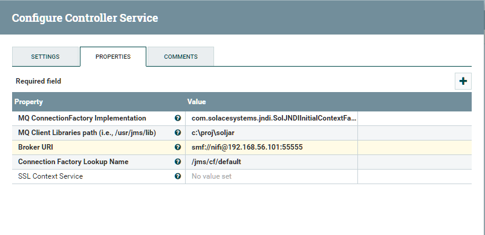

This document demonstrates how to integrate the Solace Java Message Service (JMS) with Apache NiFi JMS Processor for JMS message publish and consumption. The goal of this document is to outline best practices for this integration to enable efficient use of both Apache NiFi and Solace JMS.

The target audience of this document is developers with knowledge of both NiFi and JMS in general. As such this document focuses on the technical steps required to achieve the integration. For detailed background on either Solace JMS or NiFi refer to the referenced documents below.
This document is divided into the following sections to cover the Solace JMS integration with Apache NiFi:
These links contain information related to this guide:
NiFi JMS Bundle comes with 2 processors, ConsumeJMS and PublishJMS. The 2 out-of-box processors work well with some messaging brokers, i.e. ActiveMQ and etc. However, not all messaging brokers work well with the built-in JMS processors that expect zero-argument connection factory constructors. Solace connection factory and some other JMS connection factories cannot be instantiated with zero argument. There is a current NiFi Jira on this major bug.
The alternative is to use the standard JMS JNDI connection factory. Most of JMS brokers do provide JNDI connection factory support. Current NiFi JMS service has a JMS ControllerService, dropping in a new JMS JNDI ControllerService is appropriate for enabling JNDI support.
By NiFi definition, a ControllerService provides shared state and functionality across Processors, other ControllerServices, and ReportingTasks within a single JVM. An example use case may include loading a very large dataset into memory. By performing this work in a ControllerService, the data can be loaded once and be exposed to all Processors via this service, rather than requiring many different Processors to load the dataset themselves.
This is a demostration of an approach for publishing and consuming messages from a Java Messaging Service (JMS) ControllerService in NiFi processors. The full code is freely available on Github as part of this project in src/nifi-jms-jndi.
The general NiFi Controller Services is documented in the NiFi Developer Guide. The developement guide outlined in this document explains how JNDI support is added.
This integration guide demonstrates how to build a JNDI connection provider and configure NiFi JMS processors to send and receive JMS messages using the new provider. Accomplishing this requires completion of the following steps.
This integration guide will demonstrate creation of Solace JMS custom sender and receiver and configuring the sender and receiver to send and receive messages. This section outlines the resources that are required, created and used in the subsequent sections.
The following Solace Event Broker resources are required.
Resource | Value | Description | |
Solace Event Broker IP:Port | __IP:Port__ | The IP address and port of the Solace Event Broker message backbone. This is the address client's use when connecting to the Solace Event Broker to send and receive message. This document uses a value of __IP:PORT__. | |
Message VPN | default | A Message VPN, or virtual event broker, to scope the integration on the Solace event broker. | |
Client Username | nifi | The client username. | |
Client Password | Optional client password. | ||
Solace Queue | toNifi | Solace destination of persistent messages consumed by NiFi | |
Solace Queue | fromNifi | Solace destination of persistent messages published from NiFi | |
JNDI Connection Factory | /jms/cf/default | The JNDI Connection factory for controlling Solace JMS connection properties | |
JNDI Queue Name | /JNDI/Q/toNifi | The JNDI name of the queue used in the samples | |
JNDI Queue Name | /JNDI/Q/fromNifi | The JNDI name of the queue used in the samples | |
The Solace JMS jars are required. They can be obtained on Solace Developer Portal Downloads or from Maven Central.
The easiest way to integrate Solace and NiFi is using the client libraries available via public Maven Central. You can download the libraries into a directory and reference them directly, the following resources are all required:
Resource | Value | Description |
Solace Common | sol-common-VERSION.jar | Solace common utilities library. |
Solace JCSMP | sol-jcsmp-VERSION.jar | Underlying Solace wireline support libraries. |
Solace JMS | sol-jms-VERSION.jar | Solace JMS 1.1 compliant libraries. |
Apache Commons language | commons-lang-2.6.jar | Common language libraries. |
Apache Commons logging | commons-logging-1.2.jar | Common logging libraries |
Apache Log4j 2 Core | log4j-core-2.8.2.jar | log4j 2 core libraries |
Apache Log4j 2 API | log4j-api-2.8.2.jar | log4j 2 API libraries |
The Solace Event Broker needs to be configured with the following configuration objects at a minimum to enable JMS to send and receive messages within the NiFi application.
For reference, the CLI commands in the following sections are from SolOS version 7.2 but will generally be forward compatible. For more details related to Solace Event Broker CLI see Solace Command Line Interface Reference . Wherever possible, default values will be used to minimize the required configuration. The CLI commands listed also assume that the CLI user has a Global Access Level set to Admin. For details on CLI access levels please see Solace Documentation section "User Authentication and Authorization".
Also note that this configuration can also be easily performed using SolAdmin, Solace's GUI management tool. This is in fact the recommended approach for configuring a Solace Event Broker. This document uses CLI as the reference to remain concise.
If you are using Solace Cloud you can skip this step because a message-VPN is already assigned. For the name, refer to the "Message VPN" in the connection details page.
This section outlines how to create a message-VPN called "default" on the event broker with authentication disabled and 2GB of message spool quota for Guaranteed Messaging. This message-VPN name is required in the configuration when connecting to the messaging event broker. In practice, appropriate values for authentication, message spool and other message-VPN properties should be chosen depending on the end application's use case.
> home
> enable
# configure
(config)# create message-vpn default
(config-msg-vpn)# authentication
(config-msg-vpn-auth)# user-class client
(config-msg-vpn-auth-user-class)# basic auth-type none
(config-msg-vpn-auth-user-class)# exit
(config-msg-vpn-auth)# exit
(config-msg-vpn)# no shutdown
(config-msg-vpn)# exit
(config)#
(config)# message-spool message-vpn default
(config-message-spool)# max-spool-usage 2000
(config-message-spool)# exit
(config)#
This section outlines how to update the default client-profile and how to create a client username for connecting to the Solace Event Broker. For the client-profile, it is important to enable guaranteed messaging for JMS messaging and transacted sessions if using transactions.
The chosen client username of "nifi" will be required by the NiFi application when connecting to the Solace Event Broker.
(config)# client-profile default message-vpn default
(config-client-profile)# message-spool allow-guaranteed-message-receive
(config-client-profile)# message-spool allow-guaranteed-message-send
(config-client-profile)# message-spool allow-transacted-sessions
(config-client-profile)# exit
(config)#
(config)# create client-username nifi message-vpn default
(config-client-username)# acl-profile default
(config-client-username)# client-profile default
(config-client-username)# no shutdown
(config-client-username)# exit
(config)#
This integration guide shows publishing messaegs to a queue consumed by NiFi and receiving messages from a queue published by NiFi application. For illustration purposes, this queues are chosen to be an exclusive queue with a message spool quota of 2GB matching quota associated with the message VPN. The queue name chosen are "toNifi" and "fromNifi".
(config)# message-spool message-vpn default
(config-message-spool)# create queue toNifi
(config-message-spool-queue)# access-type exclusive
(config-message-spool-queue)# max-spool-usage 2000
(config-message-spool-queue)# permission all delete
(config-message-spool-queue)# no shutdown
(config-message-spool-queue)# exit
(config-message-spool)# exit
(config)#
(config)# message-spool message-vpn default
(config-message-spool)# create queue fromNifi
(config-message-spool-queue)# access-type exclusive
(config-message-spool-queue)# max-spool-usage 2000
(config-message-spool-queue)# permission all delete
(config-message-spool-queue)# no shutdown
(config-message-spool-queue)# exit
(config-message-spool)# exit
(config)#
To enable the JMS clients to connect and look up the Queue destination required by Solace application, there are two JNDI objects required on the Solace Event Broker:
They are configured as follows:
(config)# jndi message-vpn default
(config-jndi)# create connection-factory /jms/cf/default
(config-jndi-connection-factory)# property-list messaging-properties
(config-jndi-connection-factory-pl)# property default-delivery-mode persistent
(config-jndi-connection-factory-pl)# exit
(config-jndi-connection-factory)# property-list transport-properties
(config-jndi-connection-factory-pl)# property direct-transport false
(config-jndi-connection-factory-pl)# property "reconnect-retry-wait" "3000"
(config-jndi-connection-factory-pl)# property "reconnect-retries" "20"
(config-jndi-connection-factory-pl)# property "connect-retries-per-host" "5"
(config-jndi-connection-factory-pl)# property "connect-retries" "1"
(config-jndi-connection-factory-pl)# exit
(config-jndi-connection-factory)# exit
(config-jndi)#
(config-jndi)# create queue JNDI/Q/toNifi
(config-jndi-queue)# property physical-name toNifi
(config-jndi-queue)# exit
(config-jndi)#
(config-jndi)# no shutdown
(config-jndi)#
(config-jndi)# create queue JNDI/Q/fromNifi
(config-jndi-queue)# property physical-name fromNifi
(config-jndi-queue)# exit
(config-jndi)#
(config-jndi)# no shutdown
(config-jndi)# exit
(config)#
URL
Solace JNDI lookup must have valid username and password in URL using uses the following format: ://[username]:[password]@[:port] The VPN name can be part of the username in the form of "username@vpnname".
Where:
URI Scheme is the uniform resource identifier (URI) scheme used for the JNDI lookup. The valid values are:
username is the user name that is required to authenticate a client connecting to the host. A client username can be used by a single or by multiple JMS clients.
password is the username password for the connection when authentication is required.
IP address is the IP address (or hostname) of the host. To specify a prioritized list of hosts that a client can attempt to connect to, list each IP address, in order of importance, separated by a comma.
port is the port number to use to establish the connection. A value is only required when the client needs to use a port other than the automatically‑assigned default port number. The default port number for is 55555 when compression is not in use, or 55003 when compression is in use. The default port for TLS/SSL connections is 55443 (note that compression is not available when TLS/SSL is used).
Note: The provided URL parameters are used for both a JNDI connection and a JMS data connection. This is useful when both the JNDI and JMS data connections are for a Solace broker that provides JNDI and JMS service. However, when the JNDI store to be used is hosted on an LDAP server, and the Solace broker is only used for the JMS broker, the specified URL parameters, which are used for the JNDI connection, can be overridden by parameters specified in the Connection Factory when creating a JMS connection.
Solace JMS JNDI project
// The client needs to specify all of the following properties:
Properties env = new Properties();
env.put(InitialContext.INITIAL_CONTEXT_FACTORY, "com.solacesystems.jndi.SolJNDIInitialContextFactory");
env.put(InitialContext.PROVIDER_URL, "<URI Scheme>://[username]:[password]@<IP address>[:port]");
// InitialContext is used to lookup the JMS administered objects.
InitialContext initialContext = new InitialContext(env);
// Lookup ConnectionFactory.
ConnectionFactory cf = (ConnectionFactory) initialContext.lookup("/jms/cf/default");
// JMS Connection
Connection connection = cf.createConnection();
// Create a non-transacted, Auto Ack session.
Session session = connection.createSession(false, Session.AUTO_ACKNOWLEDGE);
// Lookup Queue.
Queue qPub = (Queue) initialContext.lookup("/JNDI/Q/toNifi");
// Lookup Queue.
Queue qSub = (Queue) initialContext.lookup("/JNDI/Q/fromNifi");
// From the session, create a consumer for the destination.
MessageConsumer consumer = session.createConsumer(qSub);
/**
* Anonymous inner-class for receiving messages *
*/
consumer.setMessageListener(new MessageListener() {
@Override
public void onMessage(Message message) {
try {
if (message instanceof TextMessage) {
System.out.printf("TextMessage received: '%s'%n", ((TextMessage) message).getText());
} else {
System.out.println("Message received.");
}
System.out.printf("Message Dump:%n%s%n", SolJmsUtility.dumpMessage(message));
long tmStart = message.getLongProperty(ORIGINATION_TIME);
System.out.printf("appID = %d, latency = %d ms %n", message.getLongProperty("appID"), (System.currentTimeMillis() - tmStart));
} catch (JMSException e) {
System.out.println("Error processing incoming message.");
e.printStackTrace();
}
}
});
TextMessage message = session.createTextMessage("Hello world Queues!");
long t = System.currentTimeMillis();
message.setLongProperty("appID", i);
message.setLongProperty(ORIGINATION_TIME, t);
producer.send(qPub, message, DeliveryMode.PERSISTENT, Message.DEFAULT_PRIORITY, Message.DEFAULT_TIME_TO_LIVE);
The Apache NiFi can be obtained from the Apache NiFi Downloads. For help getting started with your Apache NiFi you can refer to Getting Started in NiFi Documentation.
The NiFi ‘nifi-jms-bundle' has 2 built-in processors, ‘ConsumeJMS' and ‘PublishJMS'. There is one built-in JMS connection factory provider that instantiates zero-arugment connection factory objects. Some connection factories cannot be instantiated with zero-arugments. The alternative is to use the standard JMS JNDI connection factory. Most of JMS brokers do support JNDI connection factory.
The project is based on ‘nifi-jms-bundle' from NiFi tag ‘rel/1.1.2'. ‘nifi-jms-bundle' has 2 sub projects, ‘nifi-jms-cf-service' and ‘nifi-jms-processors'. ‘nifi-jms-cf-service' is referenced by ‘nifi-jms-processors'.
Changes are made as following:
private void createConnectionFactoryInstance(ConfigurationContext context) {
String connectionFactoryImplName = getContextValue(context, CONNECTION_FACTORY_IMPL);
Properties env = new Properties();
try {
env.put(InitialContext.INITIAL_CONTEXT_FACTORY, connectionFactoryImplName);
env.put(InitialContext.PROVIDER_URL, getContextValue(context, BROKER_URI));
InitialContext initialContext = new InitialContext(env);
this.connectionFactory = (ConnectionFactory) initialContext.lookup(context.getProperty(JNDI_CF_LOOKUP).evaluateAttributeExpressions().getValue());
} catch (Exception e) {
throw new IllegalStateException("Failed to load and/or instantiate class 'com.solacesystems.jndi.SolJNDIInitialContextFactory'", e);
}
}
The maven build script is executed from ‘nifi-jms-bundle' directory as following:
~/nifi-jms-bundle $ mvn clean test nifi-nar:nar
[INFO] Scanning for projects...
[INFO] Inspecting build with total of 5 modules...
[INFO] Installing Nexus Staging features:
[INFO] ... total of 5 executions of maven-deploy-plugin replaced with nexus-staging-maven-plugin
[INFO] ------------------------------------------------------------------------
[INFO] Reactor Build Order:
[INFO]
[INFO] nifi-jms-bundle
[INFO] nifi-jms-cf-service
[INFO] nifi-jms-cf-service-nar
[INFO] nifi-jms-processors
[INFO] nifi-jms-processors-nar
[INFO]
[INFO] ------------------------------------------------------------------------
[INFO] Building nifi-jms-bundle 1.1.2
[INFO] ------------------------------------------------------------------------
...
[INFO] ------------------------------------------------------------------------
[INFO] Reactor Summary:
[INFO]
[INFO] nifi-jms-bundle .................................... SUCCESS [ 0.981 s]
[INFO] nifi-jms-cf-service ................................ SUCCESS [ 6.345 s]
[INFO] nifi-jms-cf-service-nar ............................ SUCCESS [ 0.705 s]
[INFO] nifi-jms-processors ................................ SUCCESS [ 7.412 s]
[INFO] nifi-jms-processors-nar ............................ SUCCESS [ 1.391 s]
[INFO] ------------------------------------------------------------------------
[INFO] BUILD SUCCESS
[INFO] ------------------------------------------------------------------------
[INFO] Total time: 18.709 s
[INFO] Finished at: 2017-05-13T17:22:28-04:00
[INFO] Final Memory: 27M/1064M
[INFO] ------------------------------------------------------------------------
After build script is finished, copy 2 new NAR files to build target diretories to ~/nifi-1.1.2/lib
Upon restart, NiFi shall detect 2 new NARs and reload them.
2017-05-12 22:00:20,282 INFO [main] org.apache.nifi.NiFi Loaded 121 properties
2017-05-12 22:00:20,488 INFO [main] org.apache.nifi.BootstrapListener Started Bootstrap Listener, Listening for incoming requests on port 57824
2017-05-12 22:00:20,503 INFO [main] org.apache.nifi.BootstrapListener Successfully initiated communication with Bootstrap
2017-05-12 22:00:22,664 INFO [main] org.apache.nifi.nar.NarUnpacker Contents of nar c:\proj\NIFI-1~1.2\.\lib\nifi-jms-cf-service-nar-1.1.2.nar have changed. Reloading.
2017-05-12 22:00:22,870 INFO [main] org.apache.nifi.nar.NarUnpacker Contents of nar c:\proj\NIFI-1~1.2\.\lib\nifi-jms-processors-nar-1.1.2.nar have changed. Reloading.
Up to this point, the latest JNDI connection provider is available in NiFi. By setting up JMS broker specific properties, the JNDI connection factory provider can work with broader set of JMS brokers, i.e. Solace, ActiveMQ and etc.
To go over the NiFi configurations, following screen clips give brief descriptions on relevant screens.





Gradle is used to build the Solace project. Changing directory into ‘solace-jndi' and kicking off the Gradlew script shall start the build.
~/solace-jndi $ ./gradlew build
Starting a Gradle Daemon (subsequent builds will be faster)
:compileJava
:processResources NO-SOURCE
:classes
:jar
:startScripts
:distTar
:distZip
:assemble
:compileTestJava NO-SOURCE
:processTestResources NO-SOURCE
:testClasses UP-TO-DATE
:test NO-SOURCE
:check UP-TO-DATE
:build
BUILD SUCCESSFUL
Total time: 7.72 secs
A custom task is added to ‘build.gradle' to convenience. The args must point to Solace broker msg_backbone_ip:port.
task(runQueuePubSubJNDI, dependsOn: 'classes', type: JavaExec) {
main = 'com.solace.sample.QueuePubSubJNDI'
classpath = sourceSets.main.runtimeClasspath
args '192.168.56.101'
}
After setting up both Solace broker and NiFi, the project runs and generates logs as below.
~/solace-jndi $ ./gradlew runQueuePubSubJNDI
:compileJava UP-TO-DATE
:processResources NO-SOURCE
:classes UP-TO-DATE
:runQueuePubSubJNDI
QueuePubSubJNDI initializing...
May 13, 2017 3:22:28 PM com.solacesystems.jcsmp.protocol.impl.TcpClientChannel call
INFO: Connecting to host 'orig=tcp://192.168.56.101, scheme=tcp://, host=192.168.56.101' (host 1 of 1, smfclient 2, attempt 1 of 1, this_host_attempt: 1 of 1)
May 13, 2017 3:22:28 PM com.solacesystems.jcsmp.protocol.impl.TcpClientChannel call
INFO: Connected to host 'orig=tcp://192.168.56.101, scheme=tcp://, host=192.168.56.101' (smfclient 2)
May 13, 2017 3:22:28 PM com.solacesystems.jcsmp.protocol.impl.TcpClientChannel close
INFO: Channel Closed (smfclient 2)
May 13, 2017 3:22:28 PM com.solacesystems.jcsmp.protocol.impl.TcpClientChannel call
INFO: Connecting to host 'orig=tcp://192.168.56.101, scheme=tcp://, host=192.168.56.101' (host 1 of 1, smfclient 4, attempt 1 of 1, this_host_attempt: 1 of 1)
May 13, 2017 3:22:28 PM com.solacesystems.jcsmp.protocol.impl.TcpClientChannel call
INFO: Connected to host 'orig=tcp://192.168.56.101, scheme=tcp://, host=192.168.56.101' (smfclient 4)
May 13, 2017 3:22:28 PM com.solacesystems.jcsmp.protocol.impl.TcpClientChannel call
INFO: Connecting to host 'orig=tcp://192.168.56.101, scheme=tcp://, host=192.168.56.101' (host 1 of 1, smfclient 6, attempt 1 of 1, this_host_attempt: 1 of 1)
May 13, 2017 3:22:28 PM com.solacesystems.jcsmp.protocol.impl.TcpClientChannel call
INFO: Connected to host 'orig=tcp://192.168.56.101, scheme=tcp://, host=192.168.56.101' (smfclient 6)
May 13, 2017 3:22:28 PM com.solacesystems.jcsmp.protocol.impl.TcpClientChannel close
INFO: Channel Closed (smfclient 6)
May 13, 2017 3:22:28 PM com.solacesystems.jcsmp.protocol.impl.TcpClientChannel call
INFO: Connecting to host 'orig=tcp://192.168.56.101, scheme=tcp://, host=192.168.56.101' (host 1 of 1, smfclient 8, attempt 1 of 1, this_host_attempt: 1 of 1)
May 13, 2017 3:22:28 PM com.solacesystems.jcsmp.protocol.impl.TcpClientChannel call
INFO: Connected to host 'orig=tcp://192.168.56.101, scheme=tcp://, host=192.168.56.101' (smfclient 8)
May 13, 2017 3:22:28 PM com.solacesystems.jcsmp.protocol.impl.TcpClientChannel close
INFO: Channel Closed (smfclient 8)
May 13, 2017 3:22:29 PM com.solacesystems.jms.SolSession start
INFO: SolSession started.
Waiting for a message ... (press Ctrl+C) to terminate
Connected. About to send message 'Hello world Queues!' to queue 'toNifi'...
Message 1 is sent at 1494703349358
NiFi can receive both TextMessages and BytesMessages, other message types trigger exceptions
if (message != null) {
byte[] messageBody = null;
if (message instanceof TextMessage) {
messageBody = MessageBodyToBytesConverter.toBytes((TextMessage) message);
} else if (message instanceof BytesMessage) {
messageBody = MessageBodyToBytesConverter.toBytes((BytesMessage) message);
} else {
throw new IllegalStateException("Message type other then TextMessage and BytesMessage are "
+ "not supported at the moment");
}
Map<String, Object> messageHeaders = extractMessageHeaders(message);
Map<String, String> messageProperties = extractMessageProperties(message);
response = new JMSResponse(messageBody, messageHeaders, messageProperties);
if (logger.isDebugEnabled())
logger.debug("message received : " + message.toString());
}
The received messages are from NiFi - hence some of the JMS properties are filled in by NiFi and can be quite different from the orginal messages sent from the Solace application. ‘appID' is a user property to identify messages visually. The code also computes latency between publishing and receiving.
Original text messages after looping back from NiFi are in BytesMessage type
Text: Hello world Queues!
JMSDeliveryMode: 2
JMSDestination: Queue 'toNifi'
JMSExpiration: 0
JMSMessageID: ID:fe80:0:0:0:0:5efe:c0a8:c301%net10d34e15c13a4215a0:9
JMSPriority: 0
JMSTimestamp: 1494978143660
JMSProperties: {appID:10,OriginationTime:1494978143660,JMS_Solace_DeliverToOne:false}
Message 10 is sent at 1494978143660
As noted, messages published by NiFi are BytesMessages
Message received.
Message Dump:
JMSCorrelationID: null
JMSDeliveryMode: 2
JMSDestination: Queue 'fromNifi'
JMSExpiration: 0
JMSMessageID: ID:192.168.4.175c4e815c12f327e80:59
JMSPriority: 0
JMSTimestamp: 1494978143673
JMSType: null
JMSProperties: {JMS_Solace_isXML:null,path:./,filename:390594988551742,JMS_Solace_DeliverToOne:false,appID:10,JMS_Solace_ElidingEligible:false,JMS_Solace_DeadMsgQueueEligible:false,Solace_JMS_Prop_IS_Reply_Message:false,uuid:fb93b3e0-ec07-45b0-a739-31002210971e,OriginationTime:1494978143660,JMS_Solace_DeliverToOne:false,JMS_Solace_DeadMsgQueueEligible:false,JMS_Solace_ElidingEligible:false,Solace_JMS_Prop_IS_Reply_Message:false}
Destination: Queue 'fromNifi'
AppMessageType: null
AppMessageID: ID:192.168.4.175c4e815c12f327e80:59
CorrelationId: null
SendTimestamp: 1494978143673 (Tue May 16 2017 19:42:23)
Class Of Service: USER_COS_1
DeliveryMode: PERSISTENT
Message Id: 6631883
User Property Map: 10 entries
Key 'JMS_Solace_isXML' (String): true
Key 'path' (String): ./
Key 'filename' (String): 390594988551742
Key 'JMS_Solace_DeliverToOne' (String): false
Key 'appID' (String): 10
Key 'JMS_Solace_ElidingEligible' (String): false
Key 'JMS_Solace_DeadMsgQueueEligible' (String): false
Key 'Solace_JMS_Prop_IS_Reply_Message' (String): false
Key 'uuid' (String): fb93b3e0-ec07-45b0-a739-31002210971e
Key 'OriginationTime' (String): 1494978143660
Binary Attachment: len=19
48 65 6c 6c 6f 20 77 6f 72 6c 64 20 51 75 65 75 Hello.world.Queu
65 73 21 es!
appID = 10, latency = 20 ms
Messages sent. Exiting.
[INFO ] 2017-05-16 19:42:24.770 [main] TcpClientChannel - Channel Closed (smfclient 4)
BUILD SUCCESSFUL
Total time: 3.57 secs
The Solace JMS API Online Reference Documentation section "Establishing Connection and Creating Sessions" provides details on how to enable the Solace JMS connection to automatically reconnect to the standby event broker in the case of a HA failover of a Solace Event Broker. By default Solace JMS connections will reconnect to the standby event broker in the case of an HA failover.
In general the Solace documentation contains the following note regarding reconnection:
Note: When using HA redundant event brokers, a fail-over from one event broker to its mate will typically
occur in under 30 seconds, however, applications should attempt to reconnect for at least five minutes.
In the previous section "Setting up Solace JNDI References", the Solace CLI commands correctly configured the required JNDI properties to reasonable values. These commands are repeated here for completeness.
(config)# jndi message-vpn default
(config-jndi)# connection-factory /jms/cf/default
(config-jndi-connection-factory)# property-list transport-properties
(config-jndi-connection-factory-pl)# property "reconnect-retry-wait" "3000"
(config-jndi-connection-factory-pl)# property "reconnect-retries" "20"
(config-jndi-connection-factory-pl)# property "connect-retries-per-host" "5"
(config-jndi-connection-factory-pl)# property "connect-retries" "1"
(config-jndi-connection-factory-pl)# exit
(config-jndi-connection-factory)# exit
(config-jndi)# exit
(config)#
The key component for debugging integration issues with the Solace JMS API is the API logging that can be enabled. How to enable logging in the Solace API is described below. NiFi uses slf4j to provide logging.
Solace JMS API makes use of the Jakarta Commons Logging API (JCL). The following example shows how to enable debug logging in the Solace JMS API using log4j.
By default info logs will be written to the console. This section will focus on using log4j as the logging library and tuning Solace JMS API logs using the log4j properties. Therefore in order to enable Solace JMS API logging, a user must do two things:
Below is an example Log4j properties file that will enable debug logging within the Solace JMS API.
log4j.rootLogger=info, stdout
log4j.appender.Appender1=org.apache.log4j.ConsoleAppender
log4j.appender.Appender1.layout=org.apache.log4j.PatternLayout
log4j.appender.Appender1.layout.ConversionPattern=%-7p %d [%t] %c %x - %m%n
log4j.appender.Appender2=org.apache.log4j.FileAppender
log4j.appender.Appender2.File=applog.txt
log4j.appender.Appender2.layout=org.apache.log4j.PatternLayout
log4j.appender.Appender2.layout.ConversionPattern=%-7p %d [%t] %c %x - %m%n
log4j.appender.stdout=org.apache.log4j.ConsoleAppender
log4j.appender.stdout.layout=org.apache.log4j.PatternLayout
log4j.appender.stdout.layout.ConversionPattern=%d{ISO8601} | %-5.5p | %-16.16t | %-32.32c{1} | %-32.32C %5L | %m%n
With Log4j properties file in classpath, you can get output in a format similar to the following which can help in understanding what is happening within the Solace JMS API.
[DEBUG] 2017-05-16 15:27:13.418 [main] ClientRequestResponse - Starting request timer (SMP-EstablishP2pSub) (10000 ms)
[DEBUG] 2017-05-16 15:27:13.430 [Context_2_ReactorThread] ClientRequestResponse - Stopping request timer (SMP-EstablishP2pSub)
[DEBUG] 2017-05-16 15:27:13.432 [main] SolConnection - Connection created.
[DEBUG] 2017-05-16 15:27:13.432 [main] SolConnection - Entering createSession()
[DEBUG] 2017-05-16 15:27:13.439 [main] SolSession - SolSession created. Transacted: false acknowledgeMode: 1 state: Stopped
[DEBUG] 2017-05-16 15:27:13.439 [main] SolConnection - Leaving createSession()
NiFi ‘~\NiFi\conf\logback.xml' has configurable setting for tracing and debugging processors. In addition, Data Provenance provides search for data that has been processed.
<!-- valid logging levels: TRACE, DEBUG, INFO, WARN, ERROR -->
<logger name="org.apache.nifi" level="INFO"/>
<logger name="org.apache.nifi.processors" level="WARN"/>
<logger name="org.apache.nifi.processors.standard.LogAttribute" level="DEBUG"/>
<logger name="org.apache.nifi.controller.repository.StandardProcessSession" level="WARN" />
A working sample with maven pom build is provided in GitHub with this guide: